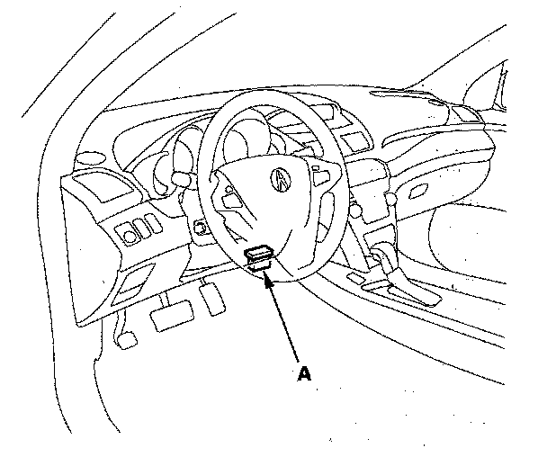
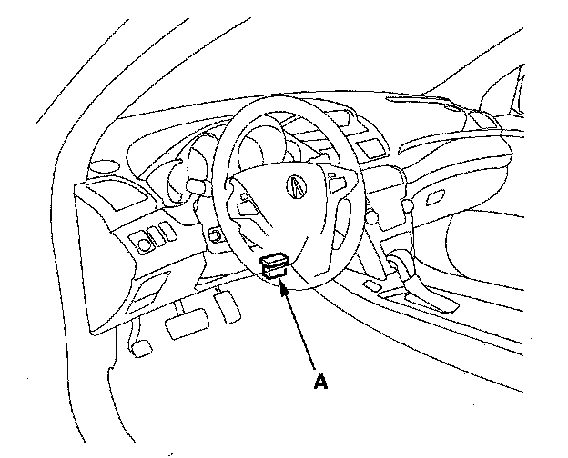
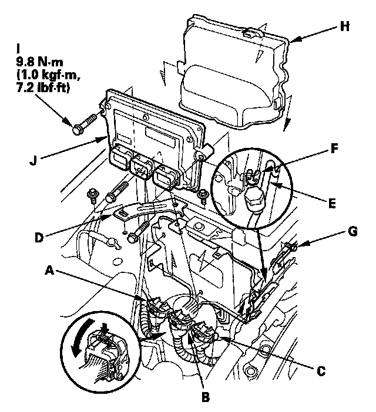

PCM Update
Updating the PCMSpecial Tools Required
- Honda diagnostic system (HDS)
- Honda interface module (HIM)
- HDS pocket tester
NOTE:
- Use this procedure when you need to update the PCM during troubleshooting procedures.
- Make sure the HDS/HIM has the latest software version.
- Before you update the PCM, make sure the battery in the vehicle is fully charged.
- Never turn the ignition switch OFF during the update. If there is a problem with the update, leave the ignition switch ON.
- To prevent PCM damage, do not operate anything electrical (headlights, audio system, brakes, A/C, power windows, door locks, etc.) during the update.
- To ensure the latest program is installed, do an PCM update whenever the PCM is substituted or replaced.
- You cannot update a PCM with a program it already has. It will only accept a new program.
- High temperature in the engine compartment might cause the PCM to become too hot to run the update. If the engine has been running before this procedure, open the hood and cool the engine compartment.
- If you need to diagnose the Honda interface module (HIM) because the HIM's red (#3) lamp came on or was flashed during the update, leave the ignition switch in the ON (II) position when you disconnect the HIM from the data link connector (DLC). This will prevent PCM damage.
1. Turn the ignition switch ON (II), but do not start the engine.

2. Connect the HDS to the data link connector (DLC) (A) located under the driver's side of the dashboard.
3. Make sure the HDS communicates with the PCM and other vehicle systems. If it does not, go to the DLC circuit troubleshooting. Testing and Inspection
If you are returning from the DLC circuit troubleshooting, skip steps 4 and 5 and clean the throttle body after updating the PCM.
4. USA, Canada models: Select the INSPECTION MENU with the HDS.
5. USA, Canada models: Select the ETCS TEST, then select the TP POSITION CHECK, and follow the screen prompts with the HDS.
NOTE: USA, Canada models: If the TP POSITION CHECK indicates FAILED, continue this procedure.
6. Exit the HDS diagnostic system (USA, Canada models), then select the update mode, and follow the screen prompts to update the PCM.
7. If the software in the PCM is the latest, disconnect the HDS/HIM from the DLC, and go back to the procedure that you were doing. If the software in the PCM is not the latest, follow the instructions on the screen. If prompted to choose the PGM-FI system or the A/T system, make sure you update both.
NOTE: If the PCM update system requires you to cool the PCM, follow the screen prompts. If you run into a problem (programming takes over 15 minutes, status bar goes over 100 %, D or immobilizer light flashes, HDS tablet freezes, etc.) during the update procedure, follow these steps to minimize the chance of damaging the PCM:
- Leave the ignition switch in the "ON (II)" position.
- Connect a jumper battery (do not connect a battery charger).
- Shut down the HDS.
- Disconnect the HDS from the DLC.
- Reboot the HDS.
- Reconnect the HDS to the DLC, and try the update procedure again.
8. USA, Canada models: If the TP POSITION CHECK failed in step 6, clean the throttle body.
9. Do the PCM idle learn procedure.
10. Do the CKP learn procedure.
Substituting the PCM
Special Tools Required
- Honda diagnostic system (HDS)
- Honda interface module (HIM)
- HDS pocket tester
NOTE: Use this procedure when you need to substitute a known-good PCM during troubleshooting procedures.

1. Connect the HDS to the data link connector (DLC) (A) located under the driver's side of the dashboard.
2. Turn the ignition switch ON (II).
3. Make sure the HDS communicates with the PCM and other vehicle systems. If it does not, go to the DLC circuit troubleshooting. Testing and Inspection
If you are returning from DLC circuit troubleshooting, skip step 4 to 9, then clean the throttle body after substituting the PCM.
4. USA, Canada models: Select the INSPECTION MENU with the HDS.
5. USA, Canada models: Select the ETCS TEST, then select the TP POSITION CHECK, and follow the screen prompts.
NOTE: USA, Canada models: If the TP POSITION CHECK indicates FAILED, continue this procedure.
6. Turn the ignition switch OFF.
7. Jump the SCS line with the HDS.

8. Remove the bracket (D), then free the A/C discharge line (E) from the clip (F) and remove the A/C suction line mounting bracket bolt (G).
9. Remove the cover (H), then disconnect the PCM connectors A, B, and C.
NOTE: PCM connectors A, B, and C have symbols (A=D, B=A, C=O) embossed on them for identification.
10. Remove the bolts (I), then remove the PCM (J).
11. Install the parts in the reverse order of removal.
12. Open the SCS with the HDS.
13. Turn the ignition switch ON (II).
NOTE: USA, Canada models: DTC P0630 "VIN Not Programmed or Mismatch" may be stored because the VIN has not been programmed into the PCM; ignore it, and continue this procedure.
14. USA, Canada models: Manually input the VIN to the PCM with the HDS.
15. Update the PCM if it does not have the latest software.
16. Select the IMMOBI SYSTEM with the HDS.
17. Enter the immobilizer code with the PCM replacement procedure in the HDS; it allows you to start the engine.
18. Reset the PCM with the HDS.
19. USA, Canada models: If the TP POSITION CHECK failed in step 6, clean the throttle body.
20. Do the PCM idle learn procedure.
21. Do the CKP pattern learn procedure.